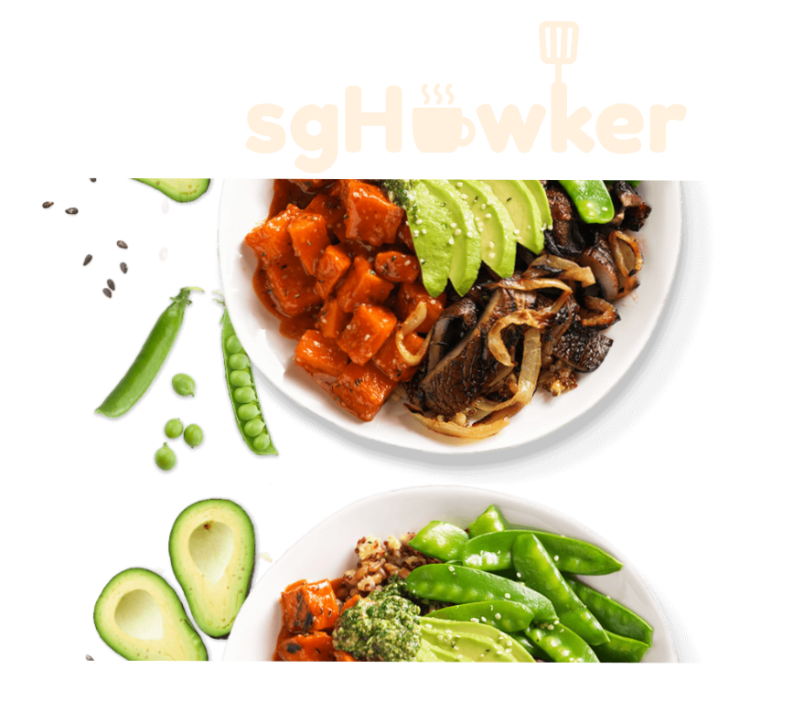

<ion-header [translucent]="true">
  <ion-toolbar color="primary">
    <ion-buttons slot="start">
      <ion-menu-button autoHide="false"></ion-menu-button>
    </ion-buttons>
    <ion-title class="header"> Home </ion-title>
  </ion-toolbar>
</ion-header>

<ion-content>
  <ion-grid>
    <ion-row class="ion-justify-content-center">
      
    </ion-row>
  </ion-grid>
</ion-content>
